1과목: 측지학 및 위성측위시스템
1. GNSS 측량 시 고려해야 할 사항에 대한 설명으로 옳지 않은 것은?
2. GNSS 측량 방법 중 보기가 설명하고 있는 방법은?
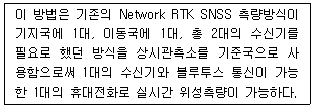
3. 표고 336.42m의 평탄지에서 거리 450m를 평균해면상의 값으로 보정하려고 할 때 보정량은? (단, 지구반지름은 6370km로 가정한다.)
4. 다음 설명 중 옳지 않은 것은?
5. GNSS의 방송궤도력에서 제공하는 정보로 옳은 것은?
6. GPS 위성과 수신기 간의 거리를 측정할 수 있는 재원과 관계가 먼 것은?
7. 중력이상에 대한 설명으로 옳지 않은 것은?
8. GNSS 관측의 정오차와 가장 거리가 먼 것은?
9. L2 반송파의 주파수가 약 1.2GHz하고 할 때, L2 반송파의 파장은? (단, 빛의 속도는 3.0×108m/s이다.)
10. 삼각점측량을 GPS측량에 의하여 작업할 때의 기선해석에 대한 설명으로 옳지 않은 것은?
11. 측지원점(Geodetic Datum)을 결정하기 위한 매개변수가 아닌 것은?
12. 우리나라가 속해 있는 UTM 좌표구역 52S에서 좌표 원점의 위치는?
13. 고정점으로부터 50km 떨어져 있는 미지점의 좌표를 GNSS관측으로 결정하려고 한다. 다음 중 가장 우수한 결과를 확보할 수 있는 조건은?
14. 지진파가 도달하지 않는 부분을 무엇이라 하는가?
15. 지자기관측에 대한 설명으로 틀린 것은?
16. 현재 운용되고 있는 GPS 위성의 궤도 경사각은?
17. 우리나라의 삼각점 성과표 상에 기재되어 있지 않은 사항은?
18. 구과량(A)과 구면삼각형 면적(B)의 관계로 옳은 것은? (단, α는 비례산수)
19. 다음 중 지구좌표에 속하지 않는 것은?
20. 다음 중 설명이 틀린 것은?
2과목: 응용측량
21. 노선측량의 순서로 옳은 것은?
22. 교각 I=60°, 외할 E=15m로 원곡선을 설치할 때 원곡선의 곡선길이는?
23. 해양의 수십ㆍ지구자기ㆍ중력ㆍ지형ㆍ지질의 측량과 해안선 및 이에 딸린 토지의 특량은 무엇이라고 하는갸?
24. 그림과 같은 삼각형의 꼭지점 A로부터 밑변을 향해서 직선으로 a:b:c=5:3:2의 비율로 면적을 분할하기 위한 BP, PQ의 거리는? (단, BC=150mm)
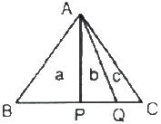
25. 그림과 같은 터널 내의 수준측량에서 측점 A의 표고를 50m, IㆍH=1.15m, HㆍP=0.56m, α=30°00‘, 두 점간의 경사거리 s'=20m일 때 천정에 설치한 B점의 표고는?
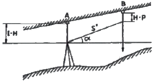
26. 지하시설물측량의 일반적인 절차로 옳은 것은?
27. 캔트가 C인 노선의 곡선부에서 속도와 반지름을 모두 3배로 할 때 변화된 캔트는?
28. 노선의 기점에서 500m인 지점에 교점(I.P.)이 있다. 곡선반지름 R=120m, 교각 I=30°이면 원곡선 시점에서 시단현의 길이와 시단현에 대한 편각은? (단, 중심선 간격은 20m이다.)
29. 그림과 같이 A, B 두 지점을 연결하는 직선터널을 건설하고자 할 때
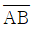
측선의 방위각은?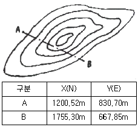
30. 사변형의 면적을 구하기 위하여 실측한 결과가 그림과 같을 때 사각형의 면적은?
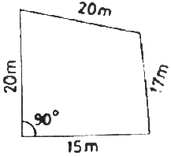
31. 하천측량에서 수위관측소의 설치장소에 대한 조건으로 옳지 않은 것은?
32. 다음 중 축척과 면적에 대한 설명으로 옳은 것은?
33. 수직 터널에 의하여 터널 내외 연결측량에 대한 설명으로 옳지 않은 것은?
34. 3점법으로 하천의 평균유속을 구하기 위하여 수면에서 수심의 20%, 60%, 80% 깊이의 유속을 측정한 결과가 0.56s/s, 0.49m/s, 0.36m/s이었다면 평균유속은?
35. 하천의 유속 및 유량 관측 방법이 아닌 것은?
36. 하천측량에서 거리표 설치와 고저측량에 관한 설명으로 틀린 것은?
37. 그림은 사각형 격자의 교점에서 절토고이다. 절토량은 얼마인가? (단, 구역의 크기는 가로 20m, 세로 10m로 동일하다.)
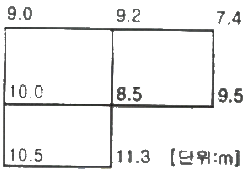
38. 클로소이드 곡선에 대한 설명으로 틀린 것은?
39. 도로의 노선측량에서 종단면도에 가재되지 않는 사항은?
40. 우리나라는 평균적으로 하루 중에 두 번 발생하는 고조 및 저조의 높이가 다르게 나타나는데 이러한 조석현상을 무엇이라 하는가?
3과목: 사진측량 및 원격탐사
41. 수동적 센서(passive sensor)로 지표로부터 반사죄는 전자기파를 렌즈와 반사경으로 집광하여 필터를 통해 분광한 후 파장별로 구분하여 각각의 영상을 기록하는 감지기는?
42. 항공사진의 촬영 요령에 대한 설명으로 옳지 않은 것은?
43. 항공사진 상에서 축척을 구하는데 필요하지 않은 것은?
44. 그림은 상호표정작업에서 6개 표정점의 종시차 이동현상을 표시한 것이다. 사용한 표정인자는?
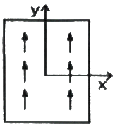
45. 항공사진측량의 특징에 대한 설명으로 옳지 않은 것은?
46. 해석적 항공삼각측량 방법 중 정밀좌표관측기로 관측한 블록 내의 사진좌표를 이용하여 직접 절대좌표를 구하는 방법은?
47. 해석적 내부표정에서 Affine 변환식으로 보정할 수 없는 현상은?
48. 영상의 재배열 방버 중 16개의 화소값을 이용하여 보간하는 방법은?
49. 원격탐사(remote sensing)에 관한 설명으로 옳지 않은 것은?
50. 촬영고도 6000m에서 초점거리 20.0cm의 사진기로 평탄지를 찍은 연직사진이 있다. 이 사진 상에 찍혀있는 비고(比高) 400m인 지대의 사진축척은?
51. 항공사진 촬영에서 투영중심점을 지나는 중력 방향의 직선이 사진면과 만나는 점은?
52. 항공사진에서 공선조건을 어긋나게 하는 요소가 아닌 것은?
53. 식물의 분광반사특성에 대한 설명으로 옳지 않은 것은?
54. 격자(Raster)형태의 지리정보자료를 기하학적으로 보정하고 재배열하려한다. 재배열방법으로 최근린내삽법을 이용할 경우에 그림에서 X위치의 영상좌표로 역변환된 지리좌표에 할당해야 할 픽셀값은?(오류 신고가 접수된 문제입니다. 반드시 정답과 해설을 확인하시기 바랍니다.)
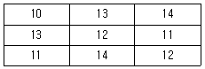
55. 실개구레이더(Real Aperture Radar)에서 전파의 방사 후 수신되기까지의 시간이 3×10-7초라면 거리방향해상도(range resolution)는? (단, 전파의 속도는 300000km/초 이다.)
56. 축척 1:20000의 항공사진을 180km/h로 촬영할 경우, 최대 허용 흔들림의 범위를 0.02mm로 한다면 최장노출시간은?
57. 초점거리 15.3cm의 카메라로 촬영된 연직사진의 평지 사진 축척은 1:25000이었다. 주점으로부터 60.4mm 떨어진 지점에서 평지로부터의 비고 100m에 의한 기복변위는?
58. 공간해상도가 높은 영상을 이용하여 해상도가 낮은 영상의 해상도를 높이는 기법은?
59. 동서 30km, 남북 20km인 대상지역을 초점거리 150mm인 항공측량카메라를 이용하여 비행고도 6000m에서 촬영하였을 때, 입체모델수는? (단, 사진크기는 23cm×23cm, 종중복도 60%, 횡종복도 30%, 촬영은 동서방향으로 한다.)
60. 과고감에 대한 설명으로 옳지 않은 것은?
4과목: 지리정보시스템
61. 벡터구조보다 비교할 때 래스터구조의 특징에 대한 설명으로 옳지 않은 것은?
62. 그림과 같이 래스터데이터 A, B가 있다. 논리연산 (A="forest') xor (B ＜5)에 의한 결과로 옳은 것은?
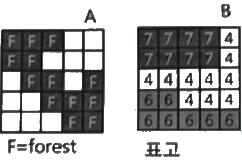
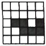
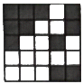
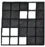
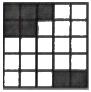
63. 지리정보시스템(GIS)에서 사용하는 수치지도를 제작하는 일반적인 방법이 아닌 것은?
64. 메타데이터(matadata)의 요소 중 데이터의 제목, 지리적 범위 및 자료 획득방법 등에 관한 정보는?
65. 수치지형도에 대한 설명으로 옳지 않은 것은?
66. A지점에 2명, B지점에 1명, C지점에 3명, D지점에 4명 등 A, B, C, D 4개의 지점에 10명의 사람이 있다. 10명 모두가 모일 경우 사람들의 총 이동거리를 최소로 할 수 있는 지점의 좌표는?
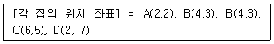
67. 수치지형모델(DIM)을 활용하는 분야로 가장 거리가 먼 것은?
68. 입체영상 중 하나의 영상에서 특정한 위치에 해당하는 실제의 객체가 다른 영상의 어느 위치에 촬영되어 있는지를 발견하는 작업은?
69. 관계형 데이터베이스를 위한 산업 표준으로 사용되고 있으며, 처리단위가 집합적인 언어로 모든 관계를 대수식으로 표현 할 수 있는 언어는?
70. 지리정보시스템(GIS)을 이용한 공간 모델링 결과의 불확실성을 평가하기 위해 주로 사용하는 방법은?
71. 그림은 셀에 대한 국소저항값이다. 음영 표시한 셀에서 국소저항이 5인 셀로 이동할 때의 최소비용경로는?
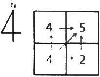
72. 다음 중 DBMS의 기본적인 기능과 거리가 먼 것은?
73. 지리정보시스템(GIS) 공간객채 타입 중 구조가 다른 것은?
74. 벡터 데이터 모델에서 속성정보가 가질 수 있는 척도가 아닌 것은?
75. 지리정보시스템(GIS) 데이터베이스의 관리 및 구축 시 적용하는 DBMS 방식의 내용으로 옳지 않은 것은?
76. 지리정보시스템(GIS)의 공간분석 기능 중 중첩기능에 대해 설명으로 옳지 않은 것은?
77. 지하시설물 데이터베이스(DB) 구축 후의 효율적인 유지관리 방안으로 가장 거리가 먼 것은?
78. 데이터 형식 중 지리정보시스템(GIS)에서 사용하는 도형정보나 수치지도의 호환을 위하여 사용되는 형식이 아닌 것은?
79. 지리정보시스템(GIS)의 분석방법 중 교통로와 시가지 확장 사이의 관례를 설명하기 위해 사용하는 방법으로 가장 적합한 것은?
80. 지리정보시스템(GIS)의 자료처리 단계를 순서대로 바르게 표시한 것은?
5과목: 측량학
81. 축척 1:5000 지형도에서 면적 8km2의 토지에 대한 도상면적은?
82. 경중률에 관한 설명으로 옳지 않은 것은?
83. 일반적으로 주곡선의 등고선 간격을 결정하는데 가장 중요한 요소는?
84. 트래버스 측량의 조정에서 컴퍼스 법칙에 의한 조정방법에 대한 설명으로 옳은 것은?
85. 미지수 x, y를 포함하고 있는 다음과 같은 비선형방정식이 있다. 최소제곱조정을 위하여 초기값을 x=1, y=1이라고 가정할 경우 첫 번째 반복(iteration)에 의한 x, y의 추정값은?
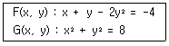
86. 각관측 장비의 조정에 대한 설명으로 옳지 않은 것은?
87. 삼각측량에 의한 관측 결과가 그림과 같을 때, C점의 좌표는? (단, AB의 거리=10m, 좌표의 단위:m)
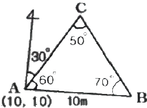
88. 다음과 같은 수준측량 성과에서 측점 4의 지반고는?
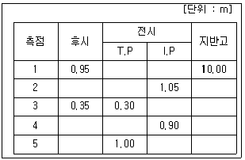
89. 줄자로 40m를 관측할 때, 양단의 고저차가 42cm이었다면 수평거리의 보정값은?
90. 그림과 같이 편심관측을 하여 S1=2000m, S2=1000m, e=0.1m, T'=120°, Ψ=300°의 결과를 얻었을 때, ∠X1, ∠X2는?(오류 신고가 접수된 문제입니다. 반드시 정답과 해설을 확인하시기 바랍니다.)
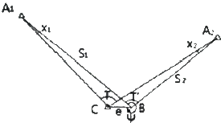
91. 트래버스 측량의 각 관측에서 허용범위 이내의 오차가 발생하였을 경우의 오차배분에 대한 설명으로 옳지 않은 것은?
92. 등고선에 대한 설명으로 틀린 것은?
93. 레벨을 조정하기 위하여 그림과 같이 설치하여 BC=CD=50m, AB=10m일 때 B에서 관측값이 b1=1.262m, B2=1.726m, D에서의 관측값이 d1=1.745m, d2=2.245m일 때 조정량은?
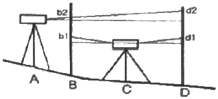
94. 수준측량의 오차 중 정오차가 아닌 것은?
95. “공간정보의 구축 및 관리 등에 관한 법률” 제정의 목적에 해당되는 것은?
96. 공공측량의 정의에 대한 설명 중 아래의 “각 호의 측량”에 대한 기준으로 옳지 않은 것은?
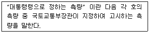
97. 직각좌표의 기준 중 동해좌표계의 적용구역으로 옳은 것은?
98. 공간정보를 체계적으로 정리하여 사용자가 검색하고 활용할 수 있도록 가공한 정보의 집합체로 정의되는 것은?
99. 고의로 측량성과를 사실과 다르게 한 자에 대한 벌칙 기준은?
100. 공공측량시행자는 공공측량성과를 얻은 경우에는 지체 없이 그 사본을 누구에게 제출하여야 하는가?